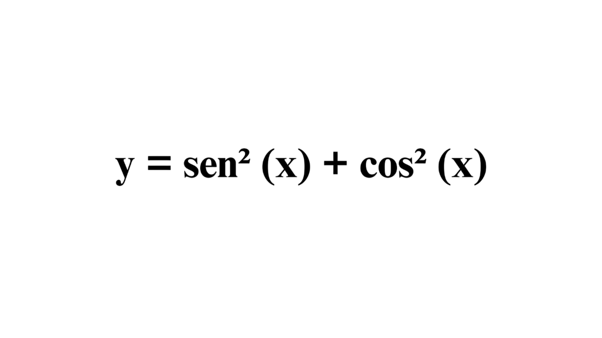

Tudo bem! pode sair do Site. :(
Devo guardar para sempre em minha memória o dia 25 de novembro, pois foi nesse dia que tivemos nosso primeiro contato. Lembro-me perfeitamente de estar à toa nas redes sociais quando, de repente, me deparei com uma mensagem de uma garota chamada Adrielen. Ela me perguntava se eu fazia meu mestrado em Matemática Pura ou Aplicada.
Desde aquele dia, nunca paramos de conversar. A cada troca de mensagens, pude conhecê-la melhor, e você, por sua vez, começou a enxergar os monstros que habitam dentro de mim. Sentia-me, dia após dia, mais próximo de você, pois compartilhamos momentos que, de tão similares, parecem verdadeiramente "congruentes".
Sei que não faz muito tempo que nos conhecemos, mas, nesse breve período, passei a nutrir uma enorme admiração por você.
"E eu vou estar te esperando nem que já esteja velhinha gagá com noventa, viúva, sozinha Não vou me importar. Vou ligar, te chamar pra sair Namorar no sofá Nem que seja além dessa vida. Eu vou estar Te esperando." (Luan Santana)
Não importa quanto tempo eu precise esperar, nem os desafios que tenhamos que enfrentar. Se for para viver ao seu lado, construir uma família repleta de amor e sonhos compartilhados, cada instante valerá a pena. Casar-me com você seria apenas mais um capítulo de uma história que já é linda por si só, onde cada gesto e cada promessa nos une ainda mais. Tudo o que desejo é viver esse sonho com você, por toda a eternidade.
Será que nosso cupido foi tão desastrado assim? Talvez, mas uma coisa é certa: no final, ele acertou em cheio.
A solução correta da equação abaixo revela que você aceita.
Correto! Você é incrível, mas antes, que tal começarmos com um namoro? Que acha?
Clique aqui e me mande o código: 28ve.Você errou, que pena! Quem sabe mais pra frente, né?